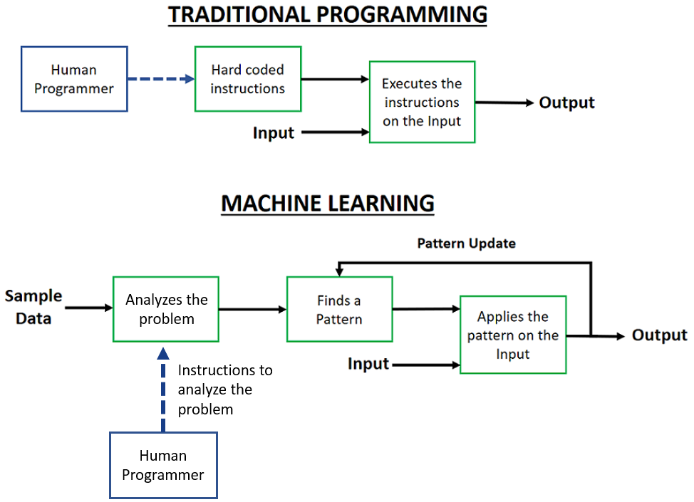
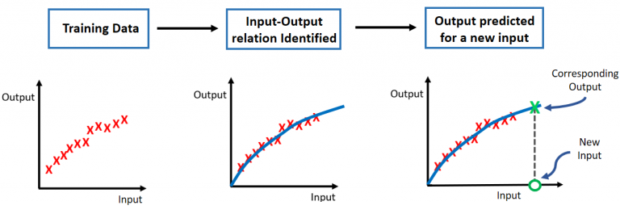
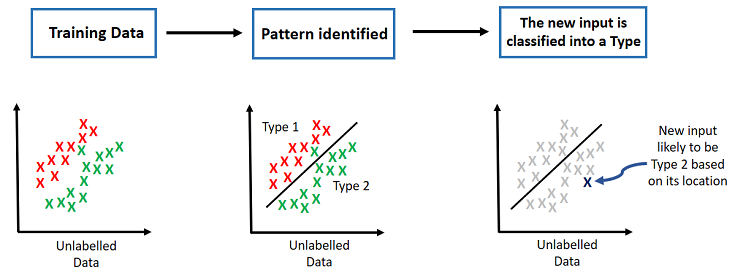

HOME BLOG EBOOKS ABOUT CONTACT SHOP
As mentioned in the previous section, Machine Learning is one of the many sub-fields of AI, perhaps the most popular of the lot. So what really is Machine Learning? In laymen terms, Machine Learning can be defined as the field of study that gives computers the ability to learn without being explicitly programmed.
Perhaps an example will make things more clear. Suppose you want to build a spam filter, there are 2 ways of doing things, one is by traditional programming methods and the other is the machine learning approach. How do we approach this problem using traditional programming methods? You might notice that most spams contain words like “Free”, “discount”, “credit card”, “hurry”, “amazing” etc. Then we can write a program to block mails that contains say 3 of these words. This would be a decent option, we’ll probably be able to get rid of most of the spams. But there’s a problem, eventually the spammers will notice that their mails with certain words are getting blocked and will decide to use some other words instead. Our spam filter will fail miserably in that case. To keep our spam filter useful, we’ll need to analyze spams and update these words every now and then.
Now if you were to use the Machine Learning approach, you would need to feed the system with a bunch of sample mails labelled as spam or not spam, called the training data. Then the system automatically figures out certain patterns to distinguish between spam and other mails (we needn’t be aware of these patterns). Then as you get mails in the future, the system cross checks the mails with the pattern it found from training data. Even if the pattern doesn’t remain a constant, every time it get further mails it analyzes those mails and keeps updating the pattern. Isn’t this spam filter more efficient already??
So basically in traditional programming, you are doing all the analyzing and just hard coding the results. Whereas in Machine Learning, all you are doing is providing it with some good sample data, while leaving the heavy lifting to the system.This data we are referring to is not limited to just words and numbers, anything that can stored digitally can be fed to a machine learning algorithm, be it pics, music, videos, anything.

So, is a Machine really Learning stuff? Nope. What Machine Learning essentially does is, it finds a pattern (a Mathematical formula) from the sample data it’s fed with, and then it tries to apply this pattern to other inputs as well, in an effort to find reasonably accurate outputs. One thing to keep in mind is that both the sample data and the other inputs should be of similar type, possibly drawn from the similar source.
Why isn’t this learning? Well, you can call this learning in a way, but not in the truest sense. For example, suppose you just learnt to read English and you are given a document in cursive, you can still read it even though you haven’t learnt about cursive writing specifically. A computer on the other hand can’t do that, a system trained in normal writing style will fail miserably at figuring out a document in cursive. It cannot use its knowledge from one task in performing another task, but we can. That’s true learning.
The term “Machine Learning” itself is inaccurate, and was coined keeping marketing purposes in mind. This goes for most terms you'll encounter in this field, you cannot go by their names. For some reason, computer scientists totally suck at naming stuff, especially in this field. The terms have a meaning that’s completely different from their literal meaning.
Here’s a more technical definition for Machine Learning:
"A computer program is said to learn from experience E with respect to some task T and some performance measure P, if its performance on T, as measured by P, improves with experience E" —Tom Mitchell, 1997
Machine Learning can be classified into 4 types depending on how much guidance or supervision they require from us humans. We’ll go through each type briefly, and go into the details in the upcoming sections.
As obvious from the name, this learning type requires human supervision. In supervised learning, we need to feed the system with labelled sample data i.e. data in the form of input-output pairs. Then the system uses this sample data to try and figure out a relation or a pattern between the input and the output, such that it can find the output for an unknown input using the relation it obtained from the sample data. Not clear?
Consider this simple example: Suppose you are given 3 input-output pairs of numbers, say (1, 3), (2, 5), (3, 7). That’s your training set or your sample data. Can you recognize a patterns from this data? If you look closely you can identify the pattern as (x, 2x+1) i.e. if the input is a number x, the corresponding output will be a number 2x+1. Now if we input a random number say x=5, we can easily predict the output as 11.
This is all there is to supervised learning.

Things are a little different for Unsupervised learning. Here the sample data is not labelled i.e. there is no input-output pairs. In fact the concept of input and output itself is not appropriate here. The idea here is to structure or classify data through analysis of its features.
For example: Suppose you have never seen a Football match before and by chance watch a video on internet. Simply from observation, you can classify players in lots of different ways. For instance, you can make out that players wearing the same jerseys are in one class (team).
The same thing happens in Unsupervised learning, the system analyzes different features in the training data and sort the inputs according to some pattern it identified.

Semi-supervised learning falls in between supervised learning & unsupervised learning. In this case, the sample data is a mix of labelled and unlabeled data. Generally, the unlabeled data is more than the labeled data. This learning type generally produces much better results than the previous two types.
Reinforcement learning is a completely different beast all together. Here the learning system called the agent, lives in an environment and observes its state or condition. Then it tries out different possible actions in different states. All we have to do is to reward the system whenever we see some desirable action from its part and punish it when it does something undesirable. This naturally makes the system perform actions that give it maximum reward points (Who doesn’t like rewards? ). So longer the system is allowed to study its environment, it will inevitably show more of desirable behavior and less of undesirable behavior.
It’s a bit like training a dog, when it does something cool, you give him a snack and when it does bad, smack him on the ear or something. The more often you do this, the dog associates certain actions with reward and certain others with pain.
Reinforced learning is most commonly used in robotics and other autonomous systems..
Which of these training methods to use depends on the data available and the type of problem you are trying to solve.
In general, the most commonly used languages in ML are probably Python, R and Matlab. Choice of programming language really depends on your personal preference, but Matlab is losing ground to the other two. However in this blog series, we are going to use Matlab/Octave, as it is easiest for beginners to grasp concepts.